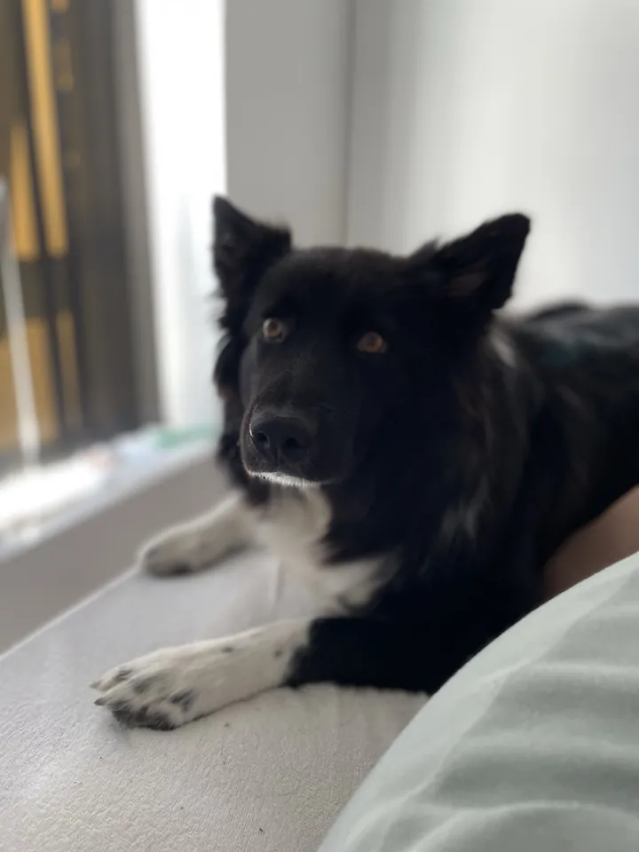

Bag boblerne
Om mig Et lille fund — slå JavaScript til for at se det.
Jeg er Heidi — multimediedesigner under uddannelse, iværksætter og uddannet kontorassistent. Jeg forstår mennesker, forbinder dem og former det digitale imellem dem. Og jeg er her for ildsjælene.
Held i uheld
Min søn ville på efterskole — og fandt den helt rigtige i Kolding. Samtidig var jeg træt af umulige arbejdstider i Tivoli, der var en hund derhjemme, som ikke kunne passe sig selv, og efterskolen skulle betales.
En veninde foreslog en online uddannelse. Lærer skulle jeg ikke være, men et kursus i digital markedsføring havde allerede peget mig i en retning. Og det eneste sted i Danmark, jeg kunne læse multimediedesign online? Kolding. Det tog jeg som et tegn.
Jeg holdt fast i Tivoli det år, min søn var afsted — det betalte regningerne, gav tid til hunden og råd til efterskolen. At uddannelsen så viste sig at være præcis det, jeg manglede for at bygge min egen virksomhed? Det er den famøse win-win-win.
Det, der driver mig
Kvindelige iværksættere og ildsjæle. Punktum.
Kvinder — og især mødre — løser ting hver eneste dag uden at spørge om lov først. Børn, hjem og alt derimellem. Alligevel bliver det sjældent til respekt, taletid og forfremmelser, når det gælder karrieren. Det kan jeg blive helt igennem passioneret over.
Derfor vil jeg gøre det lettere for kvinder at drive deres egen virksomhed — og at få den til at vokse sig så stor, at de kan ansætte andre. Ikke som en kamp mod mændene, men fordi vi har brug for begges styrker. Lige nu bliver kvindernes bare ikke brugt nok.
Sådan er jeg skruet sammen
Jeg er ENFJ-A — en „Protagonist“ — men VIA's styrketest siger mere om, hvordan jeg faktisk tænker.
Topstyrker
Det, jeg gør helt naturligt — og falder tilbage på, når det brænder på.
- Ærlighed
- Venlighed
- Spiritualitet
- Videbegær
- Social intelligens
Bundstyrker
Det, der koster ekstra energi. Og ja — æstetisk sans ligger helt i bunden. Derfor læner jeg mig op ad research, designsystemer og brugertest frem for mavefornemmelse.
- Gejst og entusiasme
- Selvkontrol
- Vedholdenhed
- Æstetisk sans
I et team Belbin
- Kontaktskaber
- Koordinator
- Formidler
- Specialist
Jeg er den, der finder de rigtige mennesker, får dem til at spille sammen — og oversætter, når de ikke taler samme sprog.
Og når jeg har fri?

Jeg har intet liv. Spøg til side — men alligevel ikke.
Det giver mig energi at arbejde med mennesker og styrke kommunikationen imellem dem. Så det er også det, jeg ender med at gøre i min fritid: hjælpe venner og familie med at få talt ordentligt sammen.
Og så er der Nala. Hun sidder tit med, når jeg har undervisning på Teams — så selvfølgelig skal hun også med i porteføljen.
Mine CV'er
2 × PDFTo sider af samme person: multimediedesigneren, der bygger digitale broer — og kontorassistenten med ti års erfaring i at få hverdagen til at køre. Klik på et CV for at åbne det.
 01 · Multimedie · PDF
Multimedie-CV
Designet i porteføljens eget visuelle sprog — med uddannelse, værktøjer og udvalgte projekter fra studiet.
Åbn PDF ↗ (åbner i ny fane)
01 · Multimedie · PDF
Multimedie-CV
Designet i porteføljens eget visuelle sprog — med uddannelse, værktøjer og udvalgte projekter fra studiet.
Åbn PDF ↗ (åbner i ny fane)
 02 · Kontor · PDF
Kontor-CV
Klassisk og printvenligt — målrettet administrative stillinger, med erfaring fra bl.a. HK Danmark og egen virksomhed.
Åbn PDF ↗ (åbner i ny fane)
02 · Kontor · PDF
Kontor-CV
Klassisk og printvenligt — målrettet administrative stillinger, med erfaring fra bl.a. HK Danmark og egen virksomhed.
Åbn PDF ↗ (åbner i ny fane)
Er du også en ildsjæl?
Jeg tager freelanceopgaver og leder efter samarbejdspartnere — og på sigt designere med hjerte, der vil bygge noget sammen med mig. Kan du genkende dig selv, så skriv.